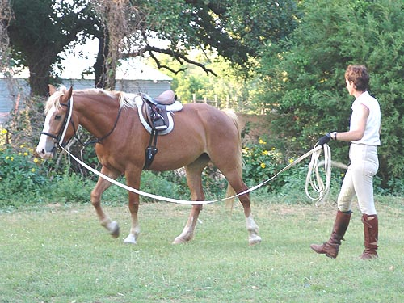
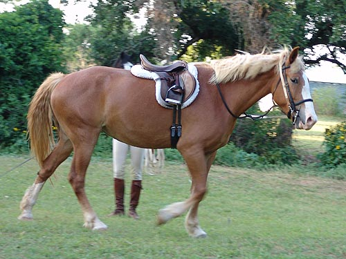
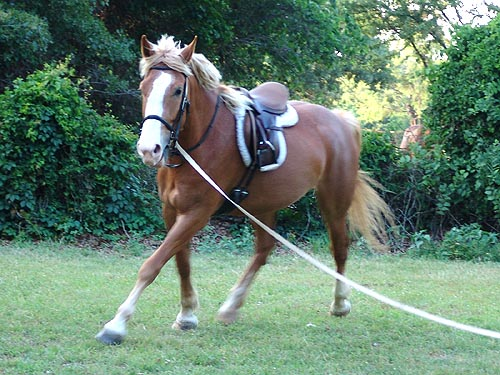
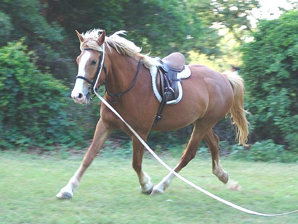
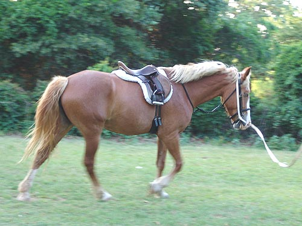

Angel Chrissie and I went by my parents' place
so she could
get some training in on Angel. We wanted
to see where
she was in her training and how she responded
to work.
First she got lunged. She was a little
distracted by the other
horses and sometimes wanted to stop and
talk to them. But,
not bad for coming off the pasture after
time off.
Then Chrissie got on and we went for a
little trail ride away from
the other horses. I was on Thuy and we
went into the far pasture.
Angel showed us that she didn't think
work was fun and that she wanted
to see if she could get back to her friends.
No bucking or bolting, but some
strong pulling in their direction with
a bit of nervous trotting. It took a little
while, but she calmed down and we walked
back quietly. Then we went
away again down the driveway and she was
great. I don't think it'll take
much to get her back in the groove.

All I was able to get were lunging
pictures, since I was on Thuy while she was riding.

She's got more bulk than Wiley and
looks closer to being finished growing.

She's pretty forward in the trot.
Maybe not as balanced as Wiley, but we've been working with him for a couple
of months now.

She makes a pleasing picture. Her
head is a bit larger, but she's put together decently.

She was a little balky under saddle
when Chrissie first got on. Carrying a whip to tap when necessary helped
considerably.